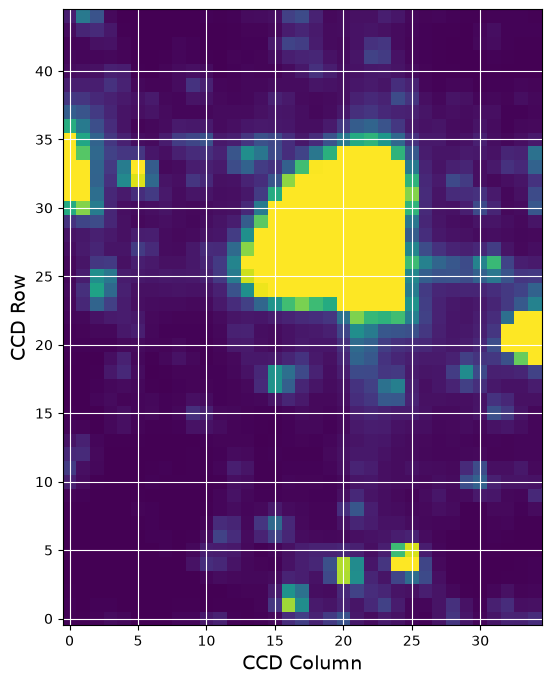
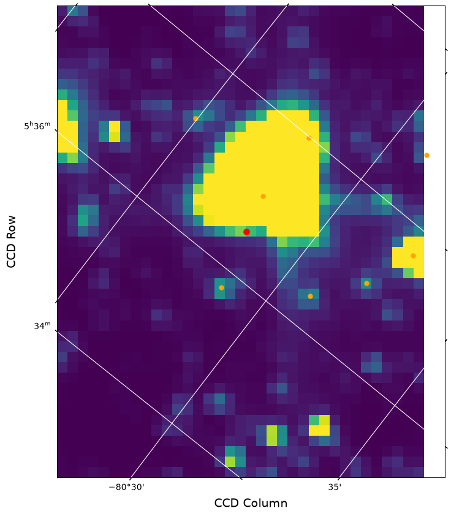

Intermediate: Create TESS FFI Cutout using Python Requests#
This notebook shows the user how to use the MAST programmatic interface to create a cutout of a small section of the TESS FFIs. For this example we will determine the RA and Dec for TIC ID = 261136679, Pi Mensae. We then perform a query to determine which sectors contain this RA and Dec, peform a cutout of the FFI timeseries, open the resulting target pixel files, and plot the first image.
This tutorial shows the users how to do the following: use astroquery.catalogs to query the TIC, use the python requests module to query the available sectors, and use python requests to obtain an FFI cutout with astrocut.
The online version of Tesscut, as well as links to the documentation can be found here, https://mast.stsci.edu/tesscut/.
Table of Contents#
Astroquery Search of the TIC
Request a FFI Cutout
Additional Resources
About this Notebook
Import Statements#
We start with a few import statements.
numpy to handle array functions
astropy.io.fits for accessing FITS files
astropy.wcs.WCS to interpret the World Coordinate Systems
matplotlib.pyplot for plotting the data
astroquery.mast to do the catalog search.
zipfile to unzip the downloaded file
For ease of use later on, we also set a the root url for our requests.
import numpy as np
from astropy.io import fits
import requests
from astroquery.mast import Catalogs
import zipfile
from astropy.wcs import WCS
import matplotlib.pyplot as plt
%matplotlib inline
urlroot = "https://mast.stsci.edu/tesscut/api/v0.1"
Get RA and Dec of your Target Using Astroquery Catalogs#
Here we do a cone search using Catalogs.query_object on the TIC catalog around our desired TIC ID. The advantage of doing this is that it gives us the nearby stars as well as the star we are looking for. The resulting table is sorted by distance from the requested object. We print out the ID and a few other TIC quantities to ensure we found the star we were looking for.
ticid = 261136679
starName = "TIC " + str(ticid)
radSearch = 5 / 60 # radius in degrees
catalogData = Catalogs.query_object(starName, radius=radSearch, collection="tic_v82")
Ra = catalogData[0]['ra']
Dec = catalogData[0]['dec']
# Print out the first five rows in the table
print(catalogData[:5]['id', 'tmag', 'jmag', 'ra', 'dec', 'objtype'])
id tmag jmag ra dec objtype
mag mag deg deg
--------- ------- ------ ---------------- ----------------- -------
724137549 20.5105 -- 84.1335985334322 -80.4709912900573 STAR
724137834 19.7145 -- 84.1222631131395 -80.3974770946282 STAR
724137780 20.7122 -- 84.6566488084288 -80.443990799317 STAR
724137543 20.6361 -- 84.0681842266655 -80.4964255751624 STAR
261136654 17.5878 16.174 84.2901682430075 -80.3916643790572 STAR
# Create a list of nearby bright stars (tess magnitude less than 14) from the rest of the data for later.
bright = catalogData['tmag'] < 14
# Make it a list of Ra, Dec pairs of the bright ones. So this is now a list of nearby bright stars.
nearbyStars = list(map(lambda x, y: [x, y], catalogData[bright]['ra'], catalogData[bright]['dec']))
len(nearbyStars)
10
Perform a Sector Query#
Using the TESS sector information service, we make a request to determine which sectors/cameras/CCDs contain data for this target. Remember that there is a set of FFIs for each TESS sector and those are broken up into 4 cameras which each have 4 CCDs. We will do this with a radius=0 cone search to find only those FFI sets that contain the star of interest. You can also make the query using a larger radius, which may be important if the star is near the edge of one of the CCDs.
Note, the request is returned in a json format. The 'results' key contains an array of dictionaries with the information we are looking for.
url = urlroot + "/sector"
myparams = {"ra": Ra, "dec": Dec, "radius": "0m"}
requestData = requests.get(url=url, params=myparams)
print(requestData.headers.get('content-type'))
application/json
The resulting dictionary of information is stored in results. This target is only in sector 1.
sectors = requestData.json()['results']
print(sectors)
[{'sectorName': 'tess-s0001-4-2', 'sector': '0001', 'camera': '4', 'ccd': '2'}, {'sectorName': 'tess-s0004-4-3', 'sector': '0004', 'camera': '4', 'ccd': '3'}, {'sectorName': 'tess-s0008-4-4', 'sector': '0008', 'camera': '4', 'ccd': '4'}, {'sectorName': 'tess-s0011-4-1', 'sector': '0011', 'camera': '4', 'ccd': '1'}, {'sectorName': 'tess-s0012-3-4', 'sector': '0012', 'camera': '3', 'ccd': '4'}, {'sectorName': 'tess-s0013-3-3', 'sector': '0013', 'camera': '3', 'ccd': '3'}, {'sectorName': 'tess-s0027-3-3', 'sector': '0027', 'camera': '3', 'ccd': '3'}, {'sectorName': 'tess-s0028-4-2', 'sector': '0028', 'camera': '4', 'ccd': '2'}, {'sectorName': 'tess-s0031-4-3', 'sector': '0031', 'camera': '4', 'ccd': '3'}, {'sectorName': 'tess-s0034-4-4', 'sector': '0034', 'camera': '4', 'ccd': '4'}, {'sectorName': 'tess-s0035-4-4', 'sector': '0035', 'camera': '4', 'ccd': '4'}, {'sectorName': 'tess-s0038-4-1', 'sector': '0038', 'camera': '4', 'ccd': '1'}, {'sectorName': 'tess-s0039-3-4', 'sector': '0039', 'camera': '3', 'ccd': '4'}, {'sectorName': 'tess-s0061-4-4', 'sector': '0061', 'camera': '4', 'ccd': '4'}, {'sectorName': 'tess-s0062-4-4', 'sector': '0062', 'camera': '4', 'ccd': '4'}, {'sectorName': 'tess-s0064-4-1', 'sector': '0064', 'camera': '4', 'ccd': '1'}, {'sectorName': 'tess-s0065-3-4', 'sector': '0065', 'camera': '3', 'ccd': '4'}, {'sectorName': 'tess-s0066-3-4', 'sector': '0066', 'camera': '3', 'ccd': '4'}, {'sectorName': 'tess-s0067-3-3', 'sector': '0067', 'camera': '3', 'ccd': '3'}, {'sectorName': 'tess-s0068-4-2', 'sector': '0068', 'camera': '4', 'ccd': '2'}, {'sectorName': 'tess-s0088-4-4', 'sector': '0088', 'camera': '4', 'ccd': '4'}, {'sectorName': 'tess-s0089-4-4', 'sector': '0089', 'camera': '4', 'ccd': '4'}, {'sectorName': 'tess-s0093-3-4', 'sector': '0093', 'camera': '3', 'ccd': '4'}, {'sectorName': 'tess-s0094-3-3', 'sector': '0094', 'camera': '3', 'ccd': '3'}, {'sectorName': 'tess-s0095-3-3', 'sector': '0095', 'camera': '3', 'ccd': '3'}]
Request a FFI Cutout with Astrocut#
Astrocut is the tool that runs the cutout service around the RA and Dec that were requested. It delivers a zipped file containing a cutout for each set of FFIs as listed above. It is also possible to request only one sector using the “sector” parameter,which we will do here. For tesscut x refers to the CCD columns and y refers to the CCD rows. Distance can be input in a variety of units, I picked pixels (“px”).
< Response [200] > means that your request succeeded.
myparams = {"ra": Ra, "dec": Dec, "x": 35, "y": 45,
"units": "px", "sector": 1}
url = urlroot + "/astrocut"
r = requests.get(url=url, params=myparams)
print(r)
print(r.headers.get('content-type'))
<Response [200]>
application/zip
Create a zip file with the name astrocut.zip containing the content returned from the request.
open('astrocut.zip', 'wb').write(r.content)
40516100
Open the zip file so we can get at the file.#
We use python’s zipfile to unzip the file, but this could also be done using unzip from the command line. In many cases you will get more than one file, one for each sector that observed the star. If you ask for a large cutout, you might also get more than one because the pixels are on more than one CCD. In this case, we got back one file. The name contains the RA and Dec as well as the sector number, camera and chip.
zipRef = zipfile.ZipFile('astrocut.zip', 'r')
zipRef.extractall('.')
zipRef.close()
# Get list of cuotut names
cutoutnames = zipRef.namelist()
print(cutoutnames)
['tess-s0001-4-2_84.133599_-80.470991_35x45_astrocut.fits']
Inspect the contents of the file.#
Use the fits.info function to see the contents of the file. It has three extensions just like a normal target pixel file. Most of the interesting information is in the PIXELS extension.
file1 = cutoutnames[0]
fits.info(file1)
Filename: tess-s0001-4-2_84.133599_-80.470991_35x45_astrocut.fits
No. Name Ver Type Cards Dimensions Format
0 PRIMARY 1 PrimaryHDU 57 ()
1 PIXELS 1 BinTableHDU 281 1282R x 12C [D, E, J, 1575J, 1575E, 1575E, 1575E, 1575E, J, E, E, 38A]
2 APERTURE 1 ImageHDU 82 (35, 45) int32
hdu1 = fits.open(file1)
hdu1[1].columns
ColDefs(
name = 'TIME'; format = 'D'; unit = 'BJD - 2457000, days'; disp = 'D14.7'
name = 'TIMECORR'; format = 'E'; unit = 'd'; disp = 'E14.7'
name = 'CADENCENO'; format = 'J'; disp = 'I10'
name = 'RAW_CNTS'; format = '1575J'; unit = 'count'; null = -1; disp = 'I8'; dim = '(35, 45)'
name = 'FLUX'; format = '1575E'; unit = 'e-/s'; disp = 'E14.7'; dim = '(35, 45)'
name = 'FLUX_ERR'; format = '1575E'; unit = 'e-/s'; disp = 'E14.7'; dim = '(35, 45)'
name = 'FLUX_BKG'; format = '1575E'; unit = 'e-/s'; disp = 'E14.7'; dim = '(35, 45)'
name = 'FLUX_BKG_ERR'; format = '1575E'; unit = 'e-/s'; disp = 'E14.7'; dim = '(35, 45)'
name = 'QUALITY'; format = 'J'; disp = 'B16.16'
name = 'POS_CORR1'; format = 'E'; unit = 'pixel'; disp = 'E14.7'
name = 'POS_CORR2'; format = 'E'; unit = 'pixel'; disp = 'E14.7'
name = 'FFI_FILE'; format = '38A'; unit = 'pixel'
)
Plot the First Image of the Time Series#
firstImage = hdu1[1].data['FLUX'][0]
fig = plt.figure(figsize=(8, 8))
plt.imshow(firstImage, origin='lower', cmap=plt.cm.viridis,
vmax=np.percentile(firstImage, 92), vmin=np.percentile(firstImage, 5))
plt.xlabel('CCD Column', fontsize=14)
plt.ylabel('CCD Row', fontsize=14)
plt.grid(axis='both', color='white', ls='solid')

Add a WCS to the image and mark the requested star as well as nearby stars.#
We use the WCS in the header to place a red dot on the image for the catalog position of the star on the figure as a demonstration of the WCS. The orange dots are the nearby stars found in the cone search done above.
Note. The WCS is based on the WCS stored in the FFI file for the central part of the time series and there can be some motion during the sector that is not captured.
wcs = WCS(hdu1[2].header)
fig = plt.figure(figsize=(10, 10))
fig.add_subplot(111, projection=wcs)
plt.imshow(firstImage, origin='lower', cmap=plt.cm.viridis, vmax=np.percentile(firstImage, 92),
vmin=np.percentile(firstImage, 5))
plt.xlabel('CCD Column', fontsize=14)
plt.ylabel('CCD Row', fontsize=14)
plt.grid(axis='both', color='white', ls='solid')
starLoc = wcs.all_world2pix([[Ra, Dec]], 0) # Second is origin
plt.scatter(starLoc[0, 0], starLoc[0, 1], s=45, color='red')
# Plot nearby stars as well, which we created using our Catalog call above.
nearbyLoc = wcs.all_world2pix(nearbyStars[1:], 0)
plt.scatter(nearbyLoc[1:, 0], nearbyLoc[1:, 1], s=25, color='orange')
<matplotlib.collections.PathCollection at 0x7f49ba726350>

Additional Resources#
TESScut API Documentation
Astrocut Documentation
TESS Homepage
Astroquery
About this Notebook#
Author: Susan E. Mullally, STScI Archive Scientist
Updated On: 2019-12-6